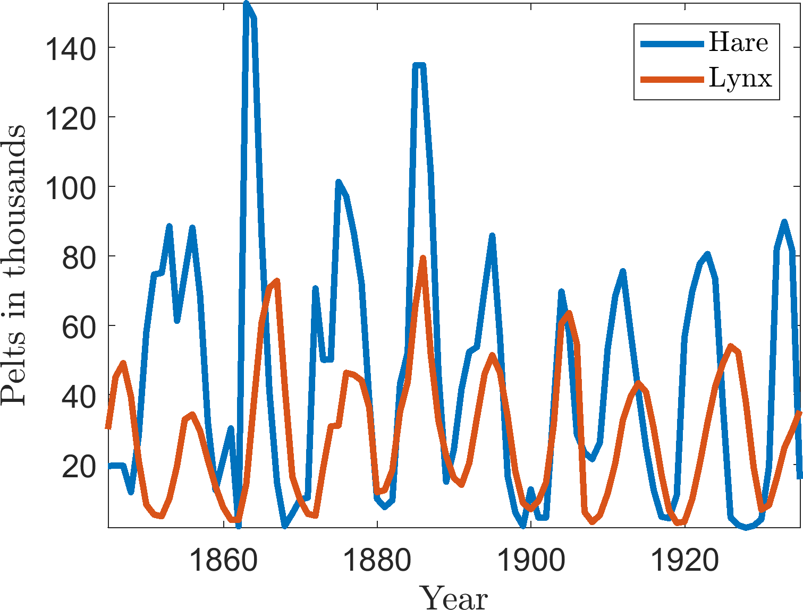
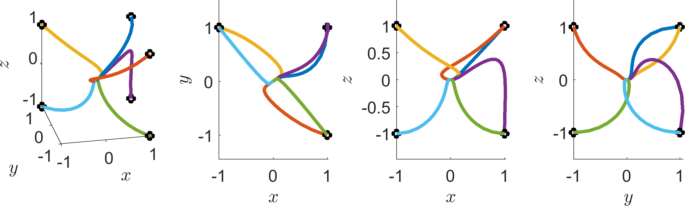
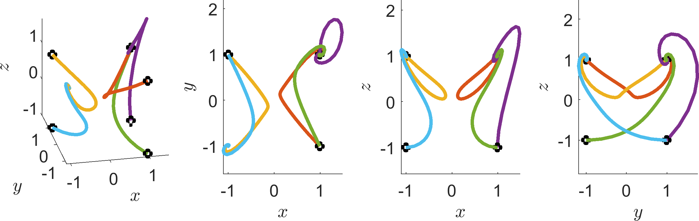
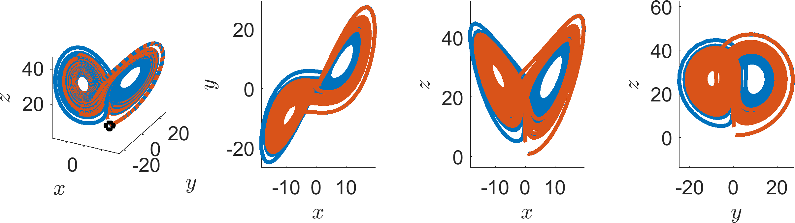
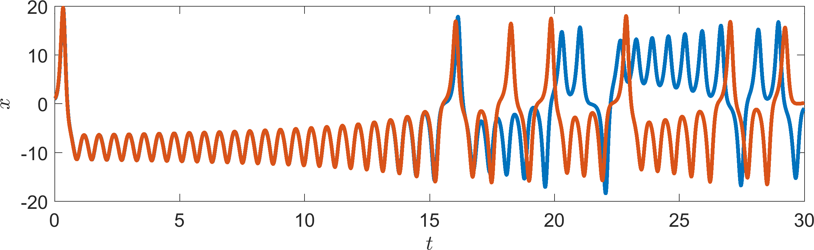

1. Lotka-Volterra equations
Data on the number of Canadian lynx and snowshoe hare pelts traded were collected by the Hudson Bay trading company1. The data are presented in Figure 1(b) and have been used as a proxy for population data.
(a)

(b)
(a) Lynx and hare in action. (b) Number of pelts recorded over time.
In this question we consider a mathematical model that has been suggested to describe the features seen in the data. Specifically, it is a predator-prey interaction model called the Lotka-Volterra model. Let \(L\) be the lynx population and \(H\) be the hare population. The interaction equations are
\[\underbrace{H\stackrel{k_1}{\rightarrow}2H}_{\textrm{Hares reproduce.}}, \quad \underbrace{H+L\stackrel{k_2}{\rightarrow}2L}_{\textrm{Lynx reproduce through predation.}}, \quad \underbrace{L\stackrel{k_3}{\rightarrow}\not{0}}_{\textrm{Lynx die out.}}. \tag{1}\]
Describe two features seen in the population data of Figure 1(b).
Name two troubling assumptions behind the Lotka-Volterra interaction equations and suggest how they could be fixed.
Write down the ODEs representing the interaction system.
Let \(u\) and \(v\) be non-dimensional variables of the hare and lynx, respectively. Non-dimensionalise the system to produce a system of the form:
\[\begin{align} \dot{u}&=u-uv,\tag{2}\\ \dot{v}&=\alpha(uv-v), \tag{3} \end{align}\]
where the time derivative is with respect to some non-dimensionalised time.
Provide the dimensional scales of the population (i.e. \([L]\), \([H]\) and \([t]\)) as well as the definition of \(\alpha\). Note that you are not required to show that \([L]\) and \([H]\) have the right dimension and \(\alpha\) is dimensionless, but it is a good way to check your working.
What are the steady states?
What is the linear stability of the states?
Consider
\[\frac{\text{ d}u}{\text{ d}v}=\frac{\dot{u}}{\dot{v}}. \tag{4}\]
Show that equation (4) can be directly integrated to show that the populations must satisfy the constraint
\[\left(\frac{e^{v}}{v}\right)\left(\frac{e^{u}}{u}\right)^\alpha=e^{C}, \tag{5}\]
where \(C\) is a constant of integration that depends on the initial conditions, which you should specify explicitly. (Hint: rearrange \(\text{ d}u/\text{ d}v\) such that one side contains all \(u\) terms and the other contains all \(v\) terms).
2. Computer simulation
Let \(\alpha=1/2\) and simulate equations (2) and (3). Plot the results in the \((u,v)\) plane along with equation (5). Note you will have to choose appropriate initial conditions, specify \(C\) in terms of these initial conditions and use an implicit plotting algorithm such as fimplicit in MATLAB.
Vary the initial conditions, what do you notice?
Do your discoveries accord with the results from question 1?
Now consider the plot of \((t,u)\) and \((t,v)\). Do the simulated curves match the data seen in Figure 1(b)?
3. Bifurcations
Consider the following set of equations which model the interactions of two populations \(N_1\) and \(N_2\), where \(r_1, r_2, K_1, K_2, b_{12}\) and \(b_{21}\) are non-negative:
\[\begin{align} \dot{N}_1&=r_1N_1\left(1-\frac{N_1}{K_1+b_{12}N_2}\right),\tag{6}\\ \dot{N}_2&=r_2N_2\left(1-\frac{N_2}{K_2+b_{21}N_1}\right). \tag{7} \end{align}\]
What is the biological interpretation of the dynamics occurring between species \(N_1\) and \(N_2\)?
Hint 1: by the symmetry of \(N_1\) and \(N_2\) in the equations whatever \(N_1\) is doing to \(N_2\), \(N_2\) is doing to \(N_1\). This means that the dynamics could be mutual creation (mutualism) or mutual destruction (competition).
Hint 2: Compare the above equations to the regular logistic curve \(\dot{u}=ru(1-u/K)\). What happens if we increase or decrease \(K\)? Thus, what influence does increasing or decreasing \(N_1\) have on \(N_2\)?
Use \(N_1=K_1u_1\), \(N_2=K_2u_2\), \(t=\tau/r_1\) to non-dimensionalise the equations. Define \(\rho=r_2/r_1\), \(\alpha_{12}=b_{12}K_2/K_1\) and \(\alpha_{21}=b_{21}K_1/K_2\). Rewrite the system parameters in terms of \(\alpha_{12}\), \(\alpha_{21}\) and \(\rho\).
Show that the system has four steady states:
\[(0,0), \quad (0,1), \quad (1,0), \quad (\bar{u}_1,\bar{u}_2), \quad \tag{8}\]
where
\[\bar{u}_1=\frac{1+\alpha_{12}}{1-\alpha_{12}\alpha_{21}},\quad\bar{u}_2=\frac{1+\alpha_{21}}{1-\alpha_{12}\alpha_{21}}. \tag{9}\]
What restrictions (if any) do we need to place on the steady states?
Determine the linear stability of the steady states. Take care to note any bifurcation conditions and how they relate to the restrictions on the steady state existence.
Exam revision
4. Predator competition
One of the assumptions in the Lotka-Volterra equation is that the predation effect is proportional to both the predator and prey population. However, as the number of prey increases the competition between predators will increase, thus, we consider the adapted equations
\[\begin{align} \dot{u}=u-uv,\tag{10}\\ \dot{v}=b(uv-v)-bv^2, \tag{11} \end{align}\]
where \(b>0\).
What are the steady states of the system?
Characterise the stability of the valid steady states, noting any dependences on the parameter \(b\).
How does predator competition change the outcome of the situation, compared to the basic Lotka-Volterra equation shown in question 1?
5. The Lorenz equations
In 1963, Edward Lorenz developed a simplified mathematical model for atmospheric convection. The model is a system of three ordinary differential equations now known as the Lorenz equations:
\[\begin{align} \dot{x}&=\sigma (y-x),\tag{12}\\ \dot{y}&=x(\rho -z)-y,\tag{13}\\ \dot{z}&=xy-\beta z. \tag{14} \end{align}\]
The equations relate the properties of a two-dimensional fluid layer uniformly warmed from below and cooled from above. In particular, the equations describe the rate of change of three quantities with respect to time: \(x\) is proportional to the rate of convection; \(y\) is proportional to the horizontal temperature variation; \(z\) is proportional to the vertical temperature variation. The constants \(\sigma\), \(\rho\), and \(\beta\) are system parameters proportional to the Prandtl number, Rayleigh number, and certain physical dimensions of the layer itself.
For simplicity, let \(\sigma=\beta=1\).
What are the steady states, noting dependence on \(\rho\)?
Characterise the stability of the zero steady state only, noting dependence on \(\rho\). Note that you will have to find the eigenvalues of a \(3\times 3\) matrix. Substituting in the values of the steady state will help you. The non-zero steady states are always either stable nodes or stable spirals when they exist.
Simulations for \(\rho>1\) and \(\rho<1\) are illustrated in Figure 2. Do these accord with your findings?
EXTENSION 1: If you are brave enough calculate the eigenvalues corresponding to the non-zero steady states and show that they always have negative real part when \(\rho>1\), but they may be complex.
EXTENSION 2: If you are even braver rerun the analysis with variables \(\sigma=10\), \(\rho=28\) and \(\beta=3\). This causes the system to act chaotically. Categorise the steady states in this case. What happens? An image of the chaotic trajectory can be seen in Figure 3.

(a) \(\rho=0.5\)

(b) \(\rho=2\)
Simulating the Lorenz equations with \(\sigma=1\), \(\beta=1\) and \(\rho\) given beneath each figure, for a variety of initial conditions. The black circles indicate the initial conditions. On the left is the full, three-dimensional realisation, whilst the rest of the plots in the row are the \((x,y)\), \((x,z)\) and \((y,z)\) projections.

(a)

(b)
Simulating the Lorenz equations with \(\sigma=10\), \(\beta=3\) and \(\rho=28\) for two initial conditions that start very close together. Top: the black circles indicate the initial conditions. On the left is the full, three-dimensional realisation, whilst the rest of the plots in the row are the \((x,y)\), \((x,z)\) and \((y,z)\) projections. Bottom: time series of \(x\), where we observe the two trajectories diverging.